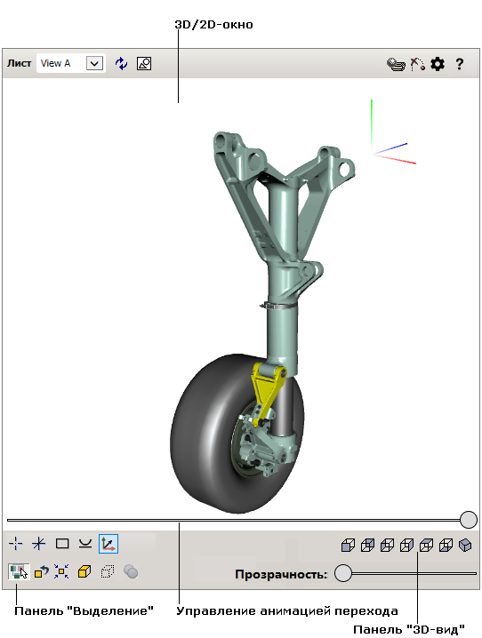

)
для переключения между окнами.
)
для переключения между окнами.Интерфейс пользователя интерактивной иллюстрации состоит из двух рабочих областей: 2D-окно и 3D-окно. Каждая рабочая область имеет свои элементы управления, описанные ниже.
Интерактивная иллюстрация может быть представлена в следующих видах:
)
для переключения между окнами.Представление интерактивной иллюстрации задается автором при ее создании и не может быть изменено во время просмотра.
|  |
3D-окно отображает трехмерную иллюстрацию текущего листа публикации. С помощью мыши и клавиатуры вы можете осуществлять навигацию в трехмерном окне. Направляющие оси в правом верхнем углу 3D-окна позволяют определить положение и направление вида в трехмерном пространстве.
2D-окно показывает векторные и растровые иллюстрации, соответствующие листу публикации.
| Элемент интерфейса пользователя | Кнопка | Назначение |
|---|---|---|
| Лист | Позволяет выбрать соответствующий лист публикации из списка. | |
| Восстановить |

|
Восстанавливает первоначальный вид текущего листа. |
| 2D-графика |
|
Позволяет переключаться между 2D- и 3D-окнами. Указанная кнопка появляется только в режиме 2D и 3D. См. примечание выше. |
| Печать графики |

|
Печать содержимого 2D- или 3D-окна. |
| Игнорировать прозрачность (только для 3D-окна) |

|
Если включено, делает прозрачные объекты нечувствительными к щелчку мыши в 3D-окне, что позволяет щелкать сквозь прозрачные объекты по объектам, которые находятся за прозрачными объектами. |
| Восстановить все объекты (только для 3D-окна) |

|
Восстанавливает первоначальный вид для всех скрытых и полупрозрачных объектов. |
| Без анимации (только для 3D-окна) |

|
Если включено, постепенный переход (анимация) между изображениями на разных листах при смене листа не используется. Переход между изображениями на разных листах будет скачкообразный. |
| Настройки |

|
Показывает или скрывает список настроек.
Скорость анимации перехода. Задает скорость перехода к разобранному виду. Включить управление анимацией перехода. Если выбрано, активирует управляющий элемент «Управление анимацией перехода», позволяющий вручную просматривать переходы между листами. Чтобы отобразить управляющий элемент, наведите указатель мыши на нижнюю часть 3D-окна или коснитесь экрана, если у вас сенсорный экран. Показывать границы поверхностей. Если выбрано, включает режим отображения границ поверхностей в 3D-окне. Сглаживание. Активирует механизм сглаживания наклонных линий в 3D-окне для минимизации искажений. Фоновое затенение. Активирует технику затенения (ambient occlusion shading) в 3D-окне для улучшения отображения затененных поверхностей. Режим выделения объектов. Задает представление объектов, выделенных в трехмерном окне. Выделять цветом – цвет выделенного объекта изменяется. Прозрачность X-ray – цвет выделенного объекта изменяется, а все остальные объекты отображаются полупрозрачными с различной степенью затенения. Прозрачная оболочка – цвет выделенного объекта изменяется, оболочка изделия или сборки отображаются полупрозрачной, невыбранные внутренние объекты скрываются. Отображать контур объекта при наведении. Отображается контур выделенного объекта. |
| Справка |

|
Показывает текст данной справки. |
| Подсветка |
При выделении объекта или выноски, наведении указателя мыши на объект в 3D-окне или на выноску в 2D-окне, объект или выноска
подсвечиваются. Автор интерактивной иллюстрации может
задать любые цвета для подсветки. По умолчанию используется следующая цветовая схема:
Желтый — для выделенного объекта или выноски. Зеленый — для выноски, на которую наведен указатель мыши. |
Содержит кнопки, позволяющие задавать разные виды в 3D-окне.
| Элемент интерфейса пользователя | Кнопка | Назначение |
|---|---|---|
| Установить центр |

|
Позволяет установить центр вращения для 3D-модели. |
| Показать/Скрыть центр вращения |

|
Позволяет показать или скрыть центр вращения в 3D-окне. |
| Подогнать |

|
Устанавливает вид таким образом, чтобы 3D-модель была полностью видна в 3D-окне. |
| Выровнять горизонт |

|
Выравнивает вид по горизонтали. |
| Показать/скрыть оси ориентации |

|
Отображает или скрывает оси направлений в трехмерном окне. |
Представленные в таблице команды позволяют показывать изделие, узел или деталь с различных направлений:
| Элемент интерфейса пользователя | Кнопка | Назначение |
|---|---|---|
| Вид спереди |

|
Показывает изделие спереди. |
| Вид сзади |

|
Показывает изделие сзади. |
| Вид слева |

|
Показывает изделие слева. |
| Вид справа |

|
Показывает изделие справа. |
| Вид сверху |

|
Показывает изделие сверху. |
| Вид снизу |

|
Показывает изделие снизу. |
| Изометрический вид |

|
Показывает изометрический вид изделия. |
Позволяет совершать различные действия с выделенными объектами в 3D-окне.
| Элемент интерфейса пользователя | Назначение |
|---|---|
| Подогнать | Устанавливает вид таким образом, чтобы объект был показан достаточно близко и целиком умещался в 3D-окне. |
| Показать | Отображает выделенные объекты, которые были предварительно скрыты в 3D-окне. |
| Скрыть | Скрывает выделенные объекты в 3D-окне. |
| Снять выделение | Снимает выделение со всех объектов. |
| Прозрачность | Позволяет установить прозрачность для выделенных объектов. Команда установки прозрачности становится доступной, если в 3D-окне выделены один или несколько объектов |
Чтобы открыть контекстно-зависимое меню, щелкните правой кнопкой мыши в 3D-окне.
| Элемент интерфейса пользователя | Назначение |
|---|---|
| Показать все | Показывает все скрытые объекты в 3D-окне. |
| Увеличить | Увеличивает размер изображения. |
| Уменьшить | Уменьшает размер изображения. |
| Подогнать по размеру | Подгоняет размер изображения к размеру окна. |
| Справка | Показывает текст данной справки. |
| О программе | Показывает номер версии публикации и программ просмотра 2D- и 3D-иллюстраций. |
Щелкните правой кнопкой мыши в 2D-окне, чтобы открыть контекстное меню.
| Операция | Действие пользователя |
|---|---|
| Выделить выноску объекта | Щелкните требуемую выноску. |
| Переместить | Перемещайте мышь, удерживая левую кнопку. |
| Масштабировать | Вращайте колесо мыши вперед или назад. |
| Операция | Действие пользователя |
|---|---|
| Выделить 3D-объект | Щелкните требуемый 3D-объект. |
| Выделить нескольких объектов | Удерживайте клавишу CTRL, щелкните требуемые 3D-объекты. | Масштабировать | Вращайте колесо мыши вперед или назад. На компьютерах Apple используйте модификатор Control. |
| Переместить | Перемещайте мышь, удерживая колесо мыши. На компьютерах Apple используйте модификатор Option. |
| Вращать | Перемещайте мышь, удерживая левую кнопку. |
| Установить центр вращения |
На панели
3D-вид
щелкните
Установить центр вращения
, затем щелкните объект в 3D-окне.
Или удерживая клавишу ALT, щелкните объект в 3D-окне. Центр ограничивающего параллелепипеда выделенного объекта устанавливается в центре трехмерного окна. |
| Настроить вид на видимые объекты |
На панели
3D-вид щелкните
Подогнать
.
|
| Настроить вид на выделенные объекты | Выделите 3D-объекты, затем щелкните Подогнать на панели Выделение. |
| Настройка вида 3D-модели с различных направлений |
На панели
3D-вид щелкните требуемую кнопку
( Спереди,
Сзади,
Слева,
Справа,
Сверху,
Снизу,
Изометрический).
|
| Скрыть (показать) группу объектов | Удерживайте клавишу CTRL, щелкните 3D-объекты; используйте кнопки Скрыть и Показать на панели Выделение. |
| Выбрать уровень прозрачности объекта | Выделите 3D-объекты, переместите движок элемента Прозрачность на панели Выделение для достижения требуемого уровня прозрачности. |